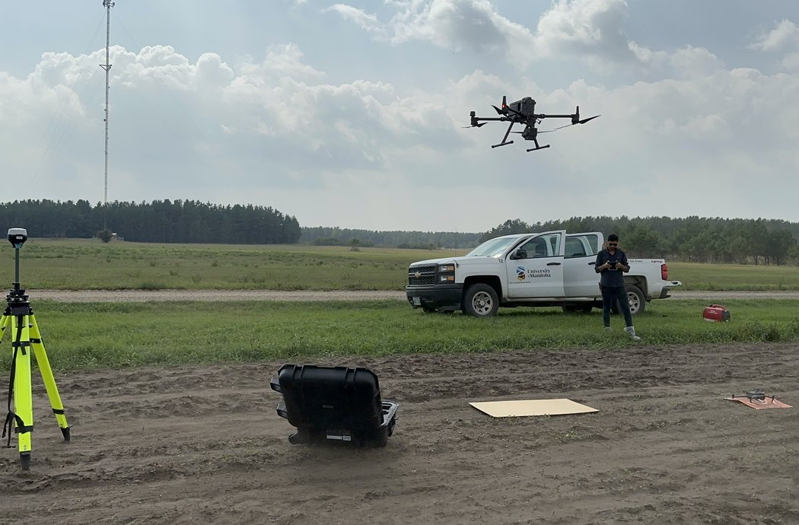
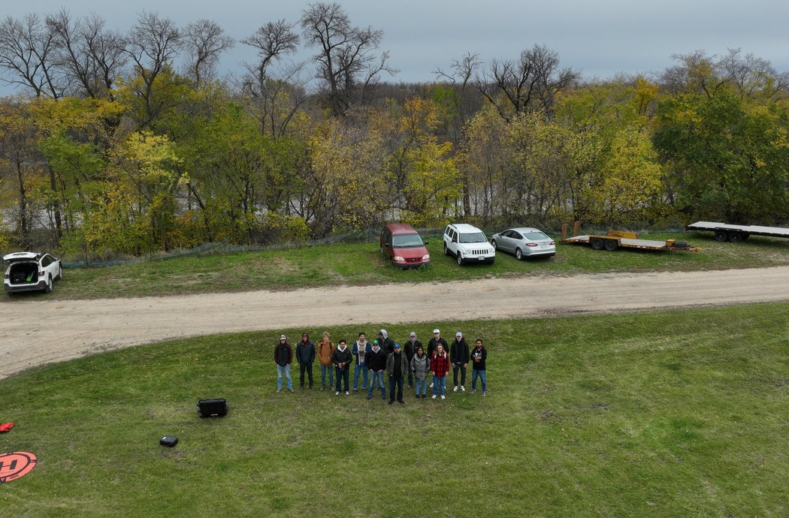
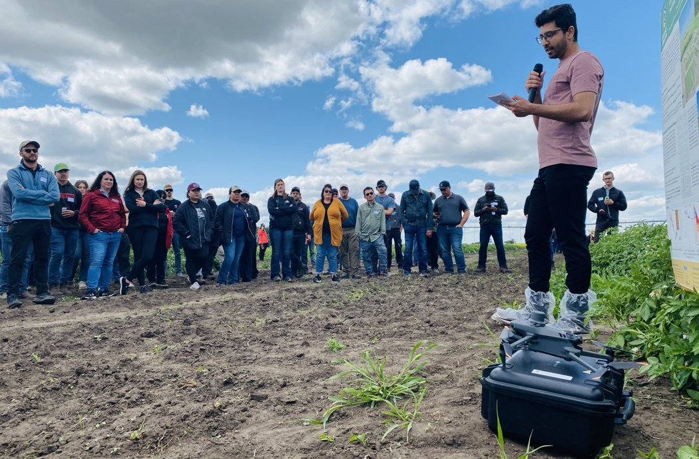
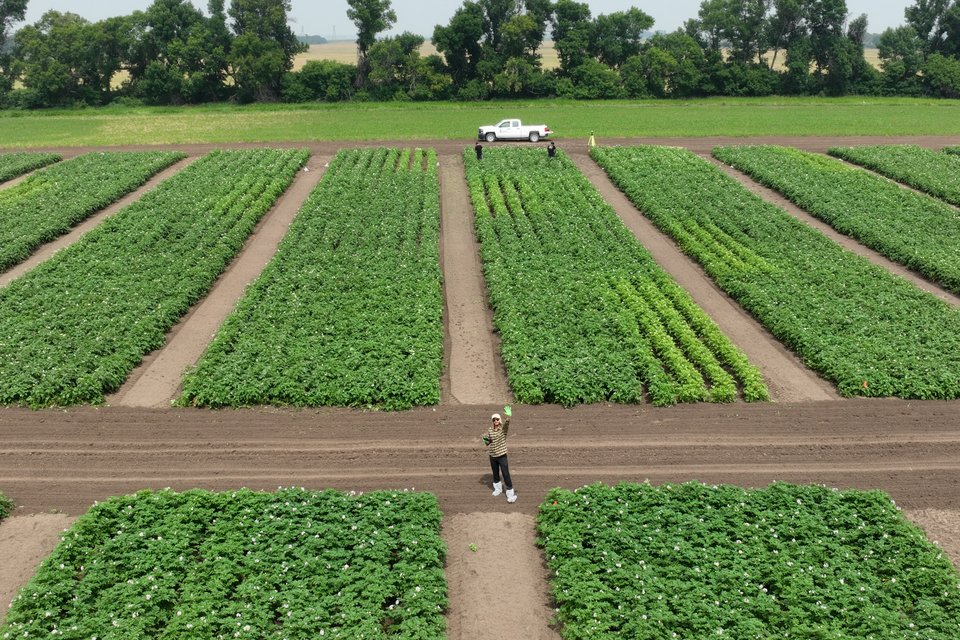

Soil scientist · Digital agronomy University of Manitoba, Winnipeg
I study what drone and satellite imagery can tell us about crop nutrition, yield, and soils. In potato trials, I compare imagery with measurements of petiole nitrate, canopy development, and the yield measured at harvest.
I work across field experiments, spectroscopy, and spatial modelling. My doctoral work focused on potato production near Carberry, Manitoba.
PhD, Soil Science (Digital Agronomy)University of Manitoba, Winnipeg
Dissertation: Remote and Proximal Sensing for Potato Nitrogen Status Assessment and Yield Prediction in Manitoba, Canada
2019–2022
MSc, Soil Chemistry, Fertility and Plant NutritionUniversity of Tehran, Tehran
2015–2019
BSc, Soil ScienceIsfahan University of Technology, Isfahan
Research
Crop nitrogen and yield in Prairie potato fields
At Carberry, Manitoba, we paired plot-scale fertilizer trials, petiole measurements and harvests with multispectral and LiDAR flights. That design made it possible to ask when canopy colour is enough to estimate nitrogen, when height and structure help, and how much yield uncertainty remains at row closure.
Hyperspectral measurements from leaf to canopy
A reflectance spectrum changes with measurement conditions as well as with the plant. I compared open-air canopy readings with fresh-leaf and dried-tissue spectra, then tested how calibrating across those settings changed nitrogen estimates. The plot-level spectra, reference measurements and metadata are archived for reuse.
Satellite mapping of soil properties
Our cropland soil carbon work evaluated whether Sentinel-2 bands and PlanetScope detail could be combined with terrain information to improve estimates. The Manitoba follow-on studies how satellite hyperspectral measurements relate to field and laboratory soil spectra.
Carberry plot layout, 2025

UAV survey and positioning equipment
Open data
Plot-level VNIR–SWIR reflectance (350–2500 nm) from the 2024 Russet Burbank nitrogen trial near Carberry, with laboratory and field spectra linked to petiole nitrate measurements.
We archived plot-level reflectance and petiole nitrate references from a Russet Burbank nitrogen trial near Carberry. The archive links field canopy spectra with fresh and dried laboratory samples, with identifiers and processing steps documented for reuse.
The 2024–2025 study paired multispectral data and canopy structure from LiDAR with harvest measurements across 172 plots. On the held-out test set, the best joint model reached an R² of 0.60 for tuber yield, compared with 0.26 for yield-only modelling. The best multi-task model had an RMSE of 3.13 t/ha.
Paper Fig. 1 · Sensors, reference measurements and model workflow · CC BY 4.0Paper Fig. 4 · Observed and predicted yield and petiole nitrate · CC BY 4.0
The same crop was measured at canopy scale and under controlled laboratory conditions. Fresh-leaf spectra gave the best 1D-CNN result (R² = 0.90). Aligning field spectra to the fresh-leaf reference raised the field result from 0.77 to 0.82.
Figures and research notes
Paper Fig. 1 · Field and laboratory spectroscopy setups · CC BY-NC-ND 4.0Paper Fig. 6 · Field model validation after calibration transfer · CC BY-NC-ND 4.0
This review examined what hyperspectral imaging can add to early potato disease scouting in Western Canada. It identifies a central field problem: disease, nutrient stress and other sources of crop variability can produce overlapping spectral responses.
Figures and research notes
What a spectral change can mean
Disease stress
A change in plant condition may appear before visible symptoms.
Other stress
Nutrient or environmental effects can produce similar patterns.
Conceptual summary of the review.
What field validation adds
Imagery
Locates changes across plants or fields.
Ground observations
Help determine what caused the change.
Independent trials
Test whether the result transfers to other settings.
Two seasons in Manitoba provided paired drone imagery and laboratory petiole nitrate measurements. Among the feature-selection and model combinations evaluated, random forest with recursive feature elimination had the strongest reported fit (R² = 0.571).
Figures and research notes
Paper Fig. 2 · Carberry study site and trial layout · CC BY 4.0Paper Fig. 5 · Measured and predicted petiole nitrate across models · CC BY 4.0
This study tested satellite image fusion in erosion-prone cropland in South Moravia, Czech Republic. Fusing PlanetScope SuperDove with selected Sentinel-2 bands and including terrain information gave the best Gaussian process regression result (R² = 0.83, RMSE = 3.3 g/kg).
Figures and research notes
Inputs to soil carbon mapping
PlanetScope SuperDove
Spatial detail.
Sentinel-2
Additional spectral information.
Terrain data
Landscape context associated with erosion and deposition.
Original schematic based on the article.
Best model fit
R² on a 0–1 scale
Fused imagery and terrain
0.83
Gaussian process regression, as reported in the article.
This review brought together Canadian work on estimating potato yield and nitrogen status with remote and proximal sensing. It found that results were concentrated in a few provinces and pointed to the need for evaluation across more growing regions.
Figures and research notes
Two scales of sensing
Proximal sensing
Measurements near the crop, often at leaf or canopy level.
Remote sensing
Imagery from aerial or satellite platforms over larger areas.
Original overview based on the review.
Two questions for a field study
Nitrogen status
Can midseason measurements distinguish crop nutrient status?
Yield
Does the estimate remain useful across sites and growing seasons?
Research questions framed from the published review.
The study compared cadmium in irrigated and rainfed wheat soils and control sites in Hamadan, western Iran. Cadmium concentrations and mobility differed by land use, and the analysis examined how soil properties relate to retention.
Figures and research notes
Mean soil cadmium by land use
mg/kg
Rainfed
0.15
Irrigated
0.18
Control
0.08
Original chart using means reported in the article.
Soil factors associated with cadmium retention
Soil composition
Lime, clay and organic matter.
Other metals
Lead was also associated with cadmium retention in the model.
Teaching assistantships and laboratory instruction
Introduction to Digital Agriculture
Supported laboratory instruction in satellite imagery, agricultural mapping and close-range measurements, including a lab comparing ASD and Nix spectroscopy for leaves and soils.
Soil and Water Management
Supported course and laboratory instruction in soil and water management.
Soil science teaching support
Assisted with laboratory exercises and demonstrated how multispectral and LiDAR measurements relate to crop and soil observations.
HIST 2730
Graded written assignments and provided feedback on historical arguments, sources and citation practice.

Field training and drone demonstrations
Leadership & service
Mitacs Accelerate · Planet Labs
Co-Principal Investigator (Co-PI)
Prepared the proposal for a 24-month project pairing Planet Tanager imagery with field and laboratory spectra to assess agricultural soils in Manitoba.
Doctoral field research
Coordinated crop and soil sampling, flight schedules, equipment, and data quality checks across research and commercial farms. The Manitoba Crop Diversification Centre managed the trial plots, with doctoral research support from Mitacs and the Keystone Potato Producers Association of Manitoba.
Mentorship and outreach
Worked with graduate students and technicians on UAV mission planning and safe field operations. Mentored a visiting researcher from Brazil for six months in UAV operations, hyperspectral data collection, and trial design. Shared results at field demonstrations for producer and research audiences.
Manitoba Society of Soil Science
Student Representative, 2023–2024.
Peer review
GIScience & Remote Sensing and Critical Insights in Agriculture.

Discussing the potato trials at a field demonstration
Conferences
2026
ISPRS Congress, Toronto · Oral presentation and poster
IEEE M2GARSS · Oral presentation
EGU General Assembly · Abstract, BG9.9
Manitoba Digital Agriculture Symposium
2025
Canadian Society of Soil Science · Oral presentation and poster
2024
ASPRS Symposium · Oral presentation
Manitoba Society of Soil Science · Poster, third place
2023
Canadian Society of Soil Science
University of Manitoba GIS Days · Panel, November 15
Hyperspectral research presentationDigital agriculture poster presentation
Fieldwork
Carberry, Manitoba
Carberry research plots, 2024

Carberry field campaign, 2025Field team and equipmentField demonstrations and outreach
Awards
2025
Research Completion Scholarship, University of Manitoba
2024
Stewart Pugh External Study Scholarship
2024
Third place, poster presentation, Manitoba Society of Soil Science
2023
International Graduate Student Entrance Scholarship, University of Manitoba